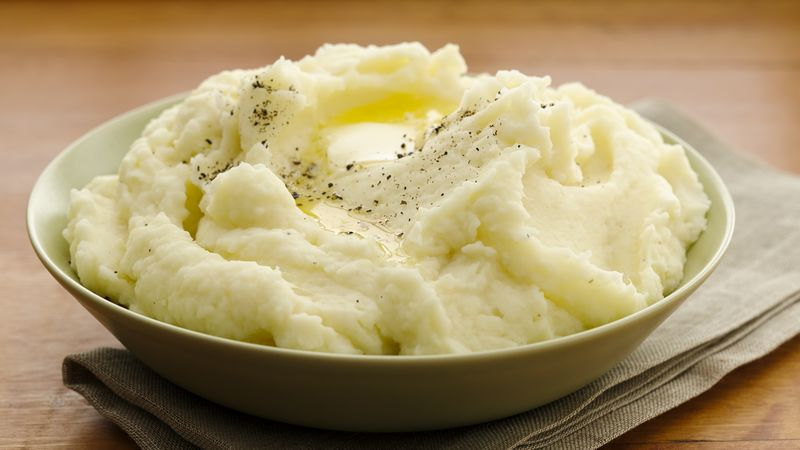

Mashed Potatoes

Description
Made with Idaho potatoes, milk, butter, and garlic, this go-to recipe
for simple, homemade mashed potatoes is a classic holiday dish.
Ingredients
- Potatoes
- Milk>
- Butter
- Garlic
Steps
- Boil the potatoes.
- Heat the milk and butter until melted.
- Mash the potatoes.
- Blend with a mixer until smooth and creamy.
- Season to taste.